?family9 GL(M)Ms
NoteIn this chapter
In this chapter, you will learn
- how a GLM connects the linear predictor to the response via a link function and a distribution, and which variant to use for which type of response (Section 9.2);
- how to check GLMs with simulated residuals and fix the typical problems: overdispersion and zero-inflation (Section 9.3);
- why effects and interactions depend on the scale (link vs. response scale) (Section 9.4), and what changes when you add random effects (Section 9.5).
Workflow steps (Section 1.1.2): step 3 (choice of the distribution), step 5 (residual checks), step 6 (inference on the response scale).
Prerequisites: the linear model (Chapter 2), random effects (Chapter 4) for the GLMM parts.
9.1 Introduction to GLMs
Generalized linear models (GLMs) extend the linear model (LM) to other (i.e. non-normal) distributions. The idea is the following:
We want to keep the regression formula \(y \sim f(x)\) of the lm with all its syntax, including splines (Section 2.5.3), random effects (Chapter 4) and all that. In the GLM world, this is called the “linear predictor”.
However, in the GLM, we now allow other residual distributions than normal, e.g. binomial, Poisson, Gamma, etc.
Some families require a particular range of the predictions (e.g. binomial requires predictions between zero and one). To achieve this, we use a so-called link function to bring the results of the linear predictor to the desired range.
In R, the distribution is specified via the family() function, which distinguishes the glm from the lm function. If you look at the help of family, you will see that the link function is an argument of family(). If no link is provided, the default link for the respective family is chosen.
A full GLM structure is thus:
\[y \sim family[link^{-1}(f(x) + RE)]\]
Note
As you see, I noted the link function as \(link^{-1}\) in this equation. The reason is that traditionally, the link function is applied to the (expected value of the) left hand side of the equation, i.e.
\[link(E[y]) = f(x)\]
This is important to keep in mind when interpreting the names of the link function - the log link, for example, means that \(log(E[y]) = f(x)\), which actually means that we assume \(E[y] = exp(f(x))\), i.e. the result of the linear predictor enters the exponential function, which assures that we have strictly positive predictions.
The function \(f(x)\) itself can have all components that we discussed before, in particular
You can add random effects as in Section 4.2.3 (using functions
lme4::glmerorglmmTMB::glmmTMB)You can also use splines using
mgcv::gam(see Section 2.5.3)
9.2 Important GLM variants
The most important are
- Bernoulli / Binomial family = logistic regression with logit link
- Poisson family = Poisson regression with log link
- Beta regression for continuous proportions in (0, 1)
Of course, there are many additional distributions that you could consider for your response. Here an overview of the common choices:
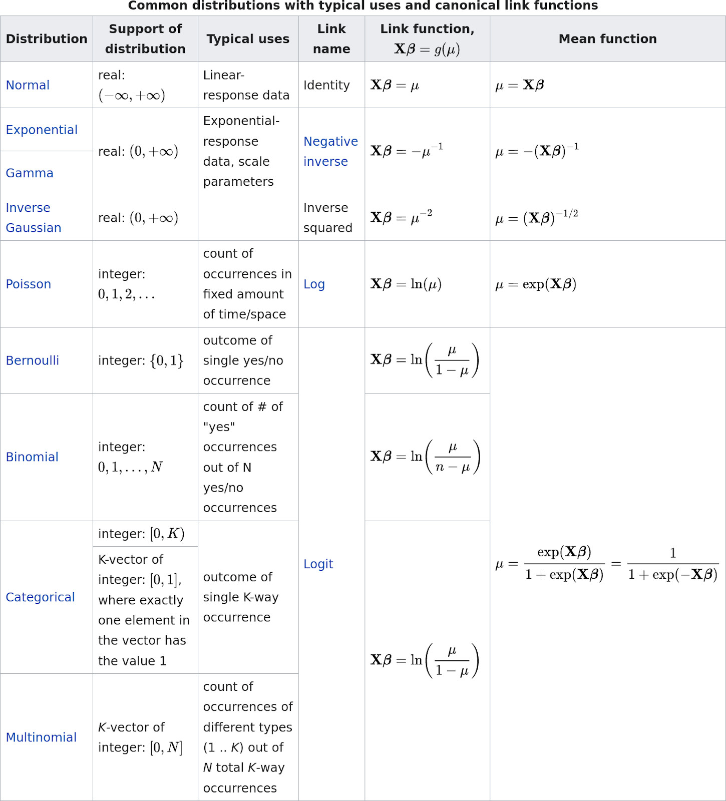
Screenshot taken from Wikipedia. Content licensed under the Creative Commons Attribution-ShareAlike License 3.0.
9.2.1 Count data - Poisson regression
The standard model for count data (0, 1, 2, 3, …) is the Poisson regression, which implements
A log-link function -> \(y = exp(ax + b)\)
A Poisson distribution
As an example, we use the data set birdfeeding from the EcoData package - the dataset consists of observations of food given by parents to nestlings as a function of the attractiveness of the nestling.
library(EcoData)
#str(birdfeeding)
plot(feeding ~ attractiveness, data = birdfeeding)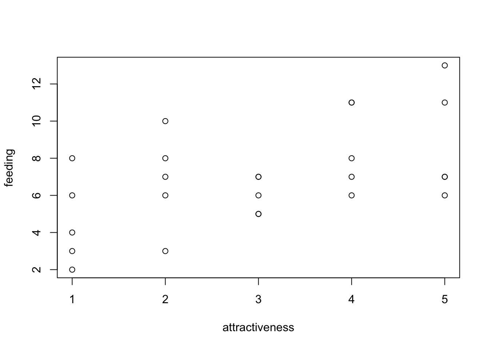
To fit a Poisson regression to this data, we use the glm() function, specifying family = "poisson". Note again that the log link function is the default (see ?family), so it does not have to be specified.
fit = glm(feeding ~ attractiveness, data = birdfeeding, family = "poisson")
summary(fit)
Call:
glm(formula = feeding ~ attractiveness, family = "poisson", data = birdfeeding)
Coefficients:
Estimate Std. Error z value Pr(>|z|)
(Intercept) 1.47459 0.19443 7.584 3.34e-14 ***
attractiveness 0.14794 0.05437 2.721 0.00651 **
---
Signif. codes: 0 '***' 0.001 '**' 0.01 '*' 0.05 '.' 0.1 ' ' 1
(Dispersion parameter for poisson family taken to be 1)
Null deviance: 25.829 on 24 degrees of freedom
Residual deviance: 18.320 on 23 degrees of freedom
AIC: 115.42
Number of Fisher Scoring iterations: 4The output is very similar to the lm(), however, as the residuals are no longer assumed to scatter normally, all statistics based on R2 have been replaced by the deviance (deviance = 2 [logL(saturated) - logL(fitted)], but note that the term is used with different definitions, see Note 9.1). So, we have
Deviance residuals on top
Instead of R2, we get null vs. residual deviance, and AIC. Based on the log-likelihood or the deviance, we can calculate a pseudo R2, e.g. McFadden, which is 1-[LogL(M)/LogL(M0)] (see the box below)
Note 9.1: Different definitions of deviance
The term deviance is used with two related, but different definitions, which is a common source of confusion:
- Deviance of a GLM (general definition): \(D = 2\,[\log L(\text{saturated}) - \log L(\text{fitted})]\). The saturated model has one parameter per observation and fits the data (almost) perfectly, so \(D\) measures how far the fitted model is from the best possible fit. This is what
deviance()returns forglmobjects, and what is shown as null and residual deviance insummary()and in theanova()tables of GLMs. For a normal linear model, \(D\) is the residual sum of squares (RSS; divided by \(\sigma^2\) for the scaled deviance), which is why the deviance plays the role of the sum of squares in GLMs (see Section 3.1.1 for the sums of squares in ANOVA). For 0/1 binomial data, \(\log L(\text{saturated}) = 0\), and thus \(D = -2 \log L\). - Deviance as \(-2 \log L\): in many mixed-model contexts, \(-2 \log L(\text{fitted})\) is called the deviance (older versions of
lme4did this in theiranova()tables, anddeviance()forlmerfits still returns it; newerlme4versions andglmmTMBprint it as-2*log(L)). It is the same as \(D\) without the term \(2 \log L(\text{saturated})\). AIC is built on this quantity, \(\mathrm{AIC} = -2 \log L + 2k\).
The two definitions differ by \(2 \log L(\text{saturated})\), which is the same for all models fitted to the same data. Therefore, differences between models agree for both definitions as long as the dispersion is fixed (e.g. Poisson, binomial), and likelihood ratio tests and AIC comparisons give the same results. The absolute values are different, and numbers calculated with the two definitions must not be compared. For normal linear models, differences in RSS and differences in \(-2 \log L\) are not identical, because the variance is estimated: at the maximum likelihood estimate, \(-2 \log L = n \log(\mathrm{RSS}/n) + n (1 + \log 2\pi)\).
Note
The deviance of our model M1 is defined as \(Deviance_{M_1} = 2 \cdot (logL(M_{saturated}) - logL(M_1))\)
Example:
Deviance of M1
fit1 = glm(feeding ~ attractiveness, data = birdfeeding, family = "poisson")
summary(fit1)$deviance[1] 18.32001fitSat = glm(feeding ~ as.factor(1:nrow(birdfeeding)), data = birdfeeding, family = "poisson")
2*(logLik(fitSat) - logLik(fit1))'log Lik.' 18.32001 (df=25)Deviance of the null model (null model is for example needed to calculate the pseudo-R2 ):
summary(fit1)$null.deviance[1] 25.82928fitNull = glm(feeding ~ 1, data = birdfeeding, family = "poisson")
2*(logLik(fitSat) - logLik(fitNull))'log Lik.' 25.82928 (df=25)Calculation of Pseudo-R2 with deviance or logL
Common pseudo-R2 such as McFadden or Nagelkerke use the logL instead of the deviance, whereas the deviance-based pseudo-R2 (1 - Dres/Dnull, the “proportion of deviance explained”) uses the deviance. However, R2 calculated based on deviance or logL differs considerably, as the former is calculated in reference to the maximal achievable fit (saturated model) while the latter just compares the improvement of fit compared to the null model:
# Based on logL
McFadden = 1-(logLik(fit1))/(logLik(fitNull))
print(McFadden)'log Lik.' 0.06314239 (df=2)# Based on deviance
R2_dev = 1- (logLik(fitSat) - logLik(fit1)) / (logLik(fitSat) - logLik(fitNull))
print(R2_dev)'log Lik.' 0.2907272 (df=25)Note: outside of the context of GL(M)Ms, deviance is sometimes defined simply as \(-2 \log L(M_1)\) (see Note 9.1 for the two definitions).
If we want to calculate model predictions, we have to transform to the response scale. Here we have a log link, i.e. we have to transform with exp(linear response).
exp(coef(fit)[1] + 3 * coef(fit)[2])(Intercept)
6.810034 Alternatively (and preferably), you can use the predict() function with type = "response"
dat = data.frame(attractiveness = 3)
predict(fit, newdata = dat) # linear predictor 1
1.918397 predict(fit, newdata = dat, type = "response") # response scale 1
6.810034 Because of the log link, effects are multiplicative: exp(coef(fit)) shows that each unit of attractiveness multiplies the expected number of feedings by about 1.16 (a rate ratio, see Table 12.5 for the interpretation of coefficients under the common link functions).
Effect plots work as before (see Section 2.3). Note that the effects package always transforms the y axis according to the link, so we have log scaling on the y axis, and the effect lines remain straight
library(effects)
plot(allEffects(fit))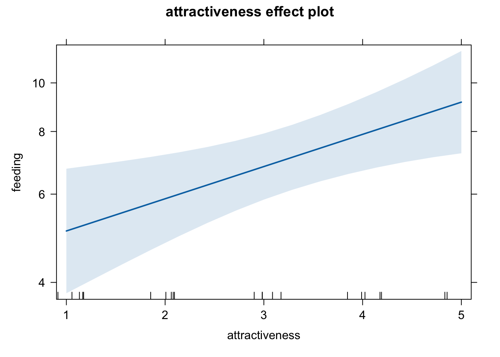
9.2.1.1 Notes on the Poisson regression
Poisson vs. log transformed count data: For count data, even if the distribution is switched, the log link is nearly always the appropriate link function. Before GLMs were widely available, it was common to fit an lm to log-transformed counts (log(y + 1) if there are zeros). This is similar to, but not the same as, a Poisson GLM with log link: the lm assumes a constant variance on the log scale, the Poisson GLM a variance equal to the mean (see also Section 9.2.3).
Log offset: If there is a variable that controls the number of counts (e.g. time, area), this variable is usually added as an offset in the following form
fit = glm(y ~ x + offset(log(area)), family = "poisson")As the log-link connects the linear predictor as in \(y = exp(x)\), and \(exp(x + log(area)) = exp(x) \cdot area\), this makes the expected counts proportional to area, or whatever variable is added as a log offset.
Interactions: As for all GLMs with nonlinear link functions, interpretation of the interactions is more complicated. See the section on interactions in GLMs (Section 9.4) for notes on this.
9.2.2 0/1 or k/n data - logistic regression
The standard model to fit binomial (0/1 or k/n) data is the logistic regression, which combines the binomial distribution with a logit link function. To get to know this model, let’s have a look at the titanic data set in EcoData:
library(EcoData)
#str(titanic)
#mosaicplot( ~ survived + sex + pclass, data = titanic)
titanic$pclass = as.factor(titanic$pclass)We want to analyze how survival in the titanic accident depended on other predictors. We could fit an lm, but the residual checks make it very evident that the data with a 0/1 response don’t fit to the assumption of an lm:
fit = lm(survived ~ sex * age, data = titanic)
summary(fit)
Call:
lm(formula = survived ~ sex * age, data = titanic)
Residuals:
Min 1Q Median 3Q Max
-0.8901 -0.2291 -0.1564 0.2612 0.9744
Coefficients:
Estimate Std. Error t value Pr(>|t|)
(Intercept) 0.637645 0.046165 13.812 < 2e-16 ***
sexmale -0.321308 0.059757 -5.377 9.35e-08 ***
age 0.004006 0.001435 2.792 0.00534 **
sexmale:age -0.007641 0.001823 -4.192 3.01e-05 ***
---
Signif. codes: 0 '***' 0.001 '**' 0.01 '*' 0.05 '.' 0.1 ' ' 1
Residual standard error: 0.4115 on 1042 degrees of freedom
(263 observations deleted due to missingness)
Multiple R-squared: 0.3017, Adjusted R-squared: 0.2997
F-statistic: 150 on 3 and 1042 DF, p-value: < 2.2e-16par(mfrow = c(2, 2))
plot(fit)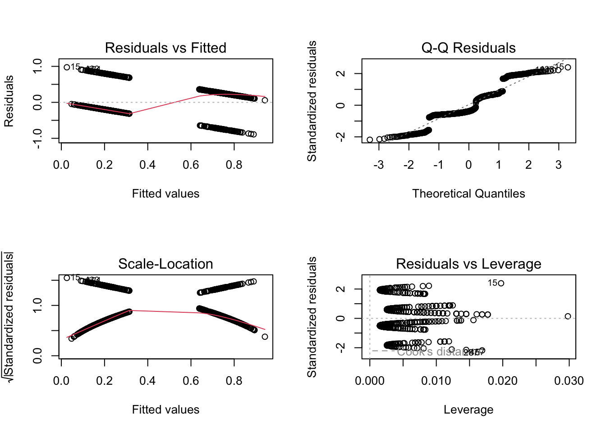
Thus, let’s move to the logistic regression, which assumes a 0/1 response + logit link. In principle, this distribution is called Bernoulli, but in R both 0/1 and k/n are called “binomial”, as Bernoulli is the special case of binomial where n = 1.
m1 = glm(survived ~ sex*age, family = "binomial", data = titanic)
summary(m1)
Call:
glm(formula = survived ~ sex * age, family = "binomial", data = titanic)
Coefficients:
Estimate Std. Error z value Pr(>|z|)
(Intercept) 0.493381 0.254188 1.941 0.052257 .
sexmale -1.154139 0.339337 -3.401 0.000671 ***
age 0.022516 0.008535 2.638 0.008342 **
sexmale:age -0.046276 0.011216 -4.126 3.69e-05 ***
---
Signif. codes: 0 '***' 0.001 '**' 0.01 '*' 0.05 '.' 0.1 ' ' 1
(Dispersion parameter for binomial family taken to be 1)
Null deviance: 1414.6 on 1045 degrees of freedom
Residual deviance: 1083.4 on 1042 degrees of freedom
(263 observations deleted due to missingness)
AIC: 1091.4
Number of Fisher Scoring iterations: 4
Note
The syntax here is for 0/1 data. If you have k/n data, you can either specify the response as cbind(k, n-k), or you can fit the glm with I(k/n) ~ x, weights = n (and family = binomial)
The coefficients are now on the logit scale (log odds, where odds = p/(1-p)); exp(coef(m1)) gives odds ratios (see Table 12.5). To transform to predictions, we have to use the inverse logit, which is in R:
cf = coef(m1)
plogis(cf[1] + cf[3] * 20) # Women, age 20.(Intercept)
0.7198448 plogis(cf[1] + cf[2] + 20 * (cf[3] + cf[4])) # Men, age 20(Intercept)
0.2430633 Alternatively, we can again use the predict function
newDat = data.frame(sex = as.factor(c("female", "male")), age = c(20,20))
predict(m1, newdata = newDat) # Linear predictor. 1 2
0.9436919 -1.1359580 predict(m1, newdata = newDat, type = "response") # Response scale. 1 2
0.7198448 0.2430633 Finally, the effect plots - note again the scaling of the y axis, which is now logit.
library(effects)
plot(allEffects(m1))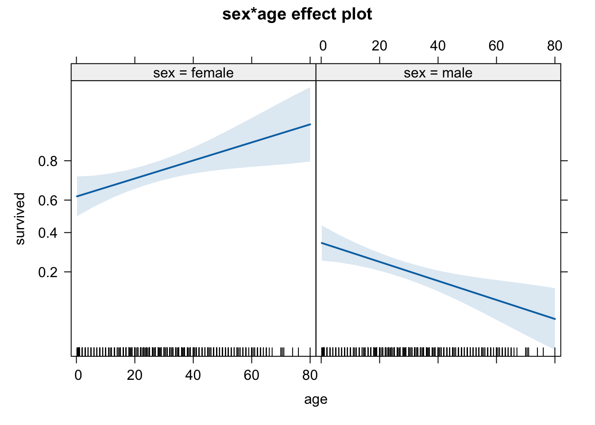
If you do an ANOVA on a glm, you should take care that you perform a Chisq and not an F-test. You notice that you have the right one if the ANOVA doesn’t supply SumSq statistics, but deviance. In the anova function, we have to set this by hand
anova(m1, test = "Chisq")Analysis of Deviance Table
Model: binomial, link: logit
Response: survived
Terms added sequentially (first to last)
Df Deviance Resid. Df Resid. Dev Pr(>Chi)
NULL 1045 1414.6
sex 1 312.612 1044 1102.0 < 2.2e-16 ***
age 1 0.669 1043 1101.3 0.4133
sex:age 1 17.903 1042 1083.4 2.324e-05 ***
---
Signif. codes: 0 '***' 0.001 '**' 0.01 '*' 0.05 '.' 0.1 ' ' 1Note that anova() gives tests for a single model only for glm. For glmer and glmmTMB, use car::Anova(), or compare two nested models with anova(m0, m1) (a likelihood-ratio test).
The function car::Anova works for most model classes and uses a ChiSq test automatically (for glm this is a likelihood-ratio test; for glmer/glmmTMB, car::Anova computes Wald chi-squared tests, which are approximate). Given that you probably want to use a type II or III Anova anyway, you should prefer it.
car::Anova(m1)Analysis of Deviance Table (Type II tests)
Response: survived
LR Chisq Df Pr(>Chisq)
sex 310.044 1 < 2.2e-16 ***
age 0.669 1 0.4133
sex:age 17.903 1 2.324e-05 ***
---
Signif. codes: 0 '***' 0.001 '**' 0.01 '*' 0.05 '.' 0.1 ' ' 1
Caution 9.1: Before testing a GLM
- Check dispersion first. For Poisson and k/n binomial models, overdispersion (see the section on dispersion problems, Section 9.3.2) makes all p-values of
car::Anova()andsummary()too small. It is not unusual that a seemingly highly significant effect disappears once the dispersion is accounted for. If you use a quasi-family (see Section 9.3.2) as a quick fix, usecar::Anova(m, test = "F"). - Coding and centering. Everything that was said in the chapter on ANOVA (Chapter 3) about type II vs. III (Section 3.2.3), contrasts (Section 3.2.4) and centering also applies to GLMs, with the difference that averages are taken on the link scale.
- Reporting on the response scale.
emmeans()works for GLMs as well. Withtype = "response", means are back-transformed to the response scale. Comparisons withpairs()are then reported as ratios (Poisson, log link) or odds ratios (binomial, logit link), while the tests are still performed on the link scale. - Mixed models. For tests and confidence intervals of GLMMs fitted with
glmerorglmmTMB, see the overview in Table 4.1.
Of course, when using car::Anova with random effects, the caveats that we discussed in the section on degrees of freedom of random effects (Section 4.5.1) apply: it does not account for changes in the degrees of freedom created by changing the fixed effect structure. Something like the lmerTest package which uses a df approximation does not exist for GLMMs. Thus, the values that you obtain here are calculated under the assumption that the RE structure is the same.
If you see large changes in your RE structure, or if you want to select on the REs, you can move to a simulated LRT (see Section 4.5.3.3).
9.2.2.1 Notes on the logistic regression
Offset: for 0/1 data with different exposure times t, as in survival analysis, a binomial GLM with cloglog link and offset(log(t)) models a constant hazard exactly (P(event) = 1 - exp(-lambda t)). The logit link has no such interpretation.
Interactions: As for all GLMs with nonlinear link functions, interpretation of the interactions is more complicated. See the section on interactions in GLMs (Section 9.4) for notes on this.
Overdispersion: 0/1 binomial responses cannot be overdispersed, but k/n responses can be. However, 0/1 responses can show overdispersion if grouped to k/n. Note the section on residual checks (Section 9.3), in particular the dispersion problems (Section 9.3.2), as well as comments on testing binomial GLMs in the
DHARMa vignette.
More than two categories: if the response is one of several unordered categories (e.g. land-use type, type of food chosen), the logistic regression generalizes to the multinomial logistic regression (nnet::multinom; with random effects, brms with family categorical). It estimates one set of coefficients for each category, as log odds ratios relative to a reference category. The response can be one category per observation or the counts per category for each unit (e.g. number of food items of each type). If the categories are ordered (e.g. damage classes, Likert scales), use a cumulative link model (ordinal::clm, or clmm with random effects), which assumes that each predictor has the same effect on all thresholds between categories (check with ordinal::nominal_test()). If several categories can apply at the same time, the response is not multinomial, but several binary responses (see the multivariate GLMs, Section 11.6). Variants exist for choices with alternative-specific predictors (mlogit) and for matched case-control designs (survival::clogit).
9.2.3 Continuous positive response - Gamma regression
The Gamma regression is the natural choice for a strictly positive, continuous, right-skewed response whose variance grows with the mean (e.g. concentrations, waiting times, biomass, body sizes). A common alternative is to log-transform and fit an lm (as we do first below), but the two are not equivalent: the log-lm assumes constant variance on the log scale and, if you back-transform predictions, incurs a retransformation bias, whereas the Gamma GLM models the mean on the original scale with a variance that scales as \(\text{Var}(y) \propto \mu^2\). With a log link (which we set explicitly below, because R’s default for Gamma() is the inverse link, see the box below), coefficients are interpreted multiplicatively - exp(coef) is the factor by which the mean changes per unit of the predictor, as in the Poisson regression.
library(faraway)fit <- lm(log(resist) ~ x1 + x2 + x3 + x4, data = wafer)
summary(fit)
Call:
lm(formula = log(resist) ~ x1 + x2 + x3 + x4, data = wafer)
Residuals:
Min 1Q Median 3Q Max
-0.17572 -0.06222 0.01749 0.08765 0.10841
Coefficients:
Estimate Std. Error t value Pr(>|t|)
(Intercept) 5.44048 0.05982 90.948 < 2e-16 ***
x1+ 0.12277 0.05350 2.295 0.042432 *
x2+ -0.29986 0.05350 -5.604 0.000159 ***
x3+ 0.17844 0.05350 3.335 0.006652 **
x4+ -0.05615 0.05350 -1.049 0.316515
---
Signif. codes: 0 '***' 0.001 '**' 0.01 '*' 0.05 '.' 0.1 ' ' 1
Residual standard error: 0.107 on 11 degrees of freedom
Multiple R-squared: 0.8164, Adjusted R-squared: 0.7496
F-statistic: 12.22 on 4 and 11 DF, p-value: 0.0004915library(DHARMa)
simulateResiduals(fit, plot = T)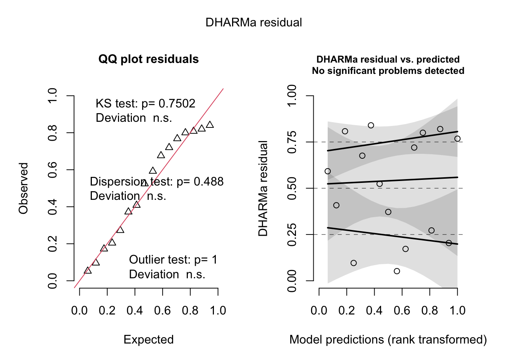
Object of Class DHARMa with simulated residuals based on 250 simulations with refit = FALSE . See ?DHARMa::simulateResiduals for help.
Scaled residual values: 0.052 0.272 0.408 0.676 0.82 0.768 0.84 0.172 0.524 0.72 0.592 0.808 0.8 0.204 0.096 0.372Alternative: Gamma regression
fit <- glm(formula = resist ~ x1 + x2 + x3 + x4,
family = Gamma(link = "log"),
data = wafer)
summary(fit)
Call:
glm(formula = resist ~ x1 + x2 + x3 + x4, family = Gamma(link = "log"),
data = wafer)
Coefficients:
Estimate Std. Error t value Pr(>|t|)
(Intercept) 5.44552 0.05856 92.983 < 2e-16 ***
x1+ 0.12115 0.05238 2.313 0.041090 *
x2+ -0.30049 0.05238 -5.736 0.000131 ***
x3+ 0.17979 0.05238 3.432 0.005601 **
x4+ -0.05757 0.05238 -1.099 0.295248
---
Signif. codes: 0 '***' 0.001 '**' 0.01 '*' 0.05 '.' 0.1 ' ' 1
(Dispersion parameter for Gamma family taken to be 0.01097542)
Null deviance: 0.69784 on 15 degrees of freedom
Residual deviance: 0.12418 on 11 degrees of freedom
AIC: 152.91
Number of Fisher Scoring iterations: 4
Note
For Gamma regression, different link functions are used. The canonical link, which is also the default in R, is the inverse link 1/x. However, also log and identity link are commonly used.
9.2.4 Continuous proportions: beta regression and alternatives
We already covered discrete proportions (k successes out of n trials), which can be modeled with a logistic regression (Section 9.2.2). Many proportions, however, are continuous: a fraction of an area, a concentration, a share of time spent in an activity. For these, there is no number of trials, so the binomial does not apply.
Before choosing a model, check how the proportion was measured:
- Counts out of a known total (e.g. germinated seeds out of seeds sown) are k/n data: use a binomial GLM, or a beta-binomial (
family = betabinomialin glmmTMB) if they are overdispersed (Douma and Weedon, 2019). - Ordered classes (e.g. 0-5%, 5-25%, 25-50%, …) are ordinal data (see the notes on the logistic regression, Section 9.2.2.1). Analyzing class midpoints as if they were measured values ignores how coarse the classes are.
- Continuous values are the topic of this section.
For continuous proportions, there are several reasonable options. The most common are presented in the following table:
| Model | R | Can handle 0/1 | Use when |
|---|---|---|---|
transformation + lm |
qlogis(y) |
only after adding a constant | quick analysis with few 0/1 (Warton and Hui, 2011); check sensitivity to the constant |
| beta regression | beta_family() |
only after squeezing into (0, 1); with many 0/1, ordered or hurdle beta are better | all values strictly between 0 and 1 |
| ordered beta | ordbeta() |
yes | 0 and 1 are the ends of the same scale (e.g. values below a detection limit) |
| hurdle beta | beta_family() + ziformula; with 1s: brms |
0 only (ziformula); 0 and 1: brms (zero_one_inflated_beta) |
the zeros arise from a different process than the other values |
The logit transform is a quick fix. The standard distribution for continuous proportions, however, is the beta distribution. It is bounded between 0 and 1 and has two parameters: the mean and the precision \(\phi\). A large \(\phi\) means that values scatter little around the mean. glmmTMB prints \(\phi\) as “Dispersion parameter”, which is confusing: for the beta, a large value means a narrow distribution. Like the binomial, the beta is naturally heteroskedastic: its variance is largest for a mean of 0.5 and shrinks towards 0 and 1. As in the logistic regression, the mean is modeled with a logit link, so coefficients are on the logit scale.
TipExample: nitrogen in leaves
We use the elemental data from EcoData (?elemental), which contain the nitrogen content of leaves as a proportion (N_dec; N_arc is its arcsine square root transformation, included in the data). There are no zeros or ones, so a standard beta regression applies.
The arcsine transformation was long the standard approach for proportions, but Warton and Hui (2011) showed that it should be avoided; we fit it here only for comparison:
abba <- elemental[elemental$Species == "ABBA", ]
m1 <- lm(N_arc ~ Year + Site, data = abba)
summary(m1)
Call:
lm(formula = N_arc ~ Year + Site, data = abba)
Residuals:
Min 1Q Median 3Q Max
-0.016553 -0.006151 -0.001069 0.004322 0.028149
Coefficients:
Estimate Std. Error t value Pr(>|t|)
(Intercept) -1.719e+01 4.323e+00 -3.975 0.000127 ***
Year 8.570e-03 2.145e-03 3.996 0.000117 ***
SiteDP 3.880e-03 5.972e-03 0.650 0.517275
SiteTN 1.043e-02 6.191e-03 1.685 0.094856 .
SiteUNI 4.646e-04 5.971e-03 0.078 0.938124
---
Signif. codes: 0 '***' 0.001 '**' 0.01 '*' 0.05 '.' 0.1 ' ' 1
Residual standard error: 0.00826 on 109 degrees of freedom
Multiple R-squared: 0.2968, Adjusted R-squared: 0.271
F-statistic: 11.5 on 4 and 109 DF, p-value: 7.936e-08Now a beta regression:
library(glmmTMB)
m2 <- glmmTMB(N_dec ~ Year + Site, family = beta_family, data = abba)
summary(m2) Family: beta ( logit )
Formula: N_dec ~ Year + Site
Data: abba
AIC BIC logLik -2*log(L) df.resid
-1148.0 -1131.6 580.0 -1160.0 108
Dispersion parameter for beta family (): 3.9e+03
Conditional model:
Estimate Std. Error z value Pr(>|z|)
(Intercept) -361.33063 82.66891 -4.371 1.24e-05 ***
Year 0.17684 0.04101 4.313 1.61e-05 ***
SiteDP 0.08905 0.12851 0.693 0.4883
SiteTN 0.22115 0.13190 1.677 0.0936 .
SiteUNI 0.01559 0.12865 0.121 0.9035
---
Signif. codes: 0 '***' 0.001 '**' 0.01 '*' 0.05 '.' 0.1 ' ' 1plot(simulateResiduals(m2))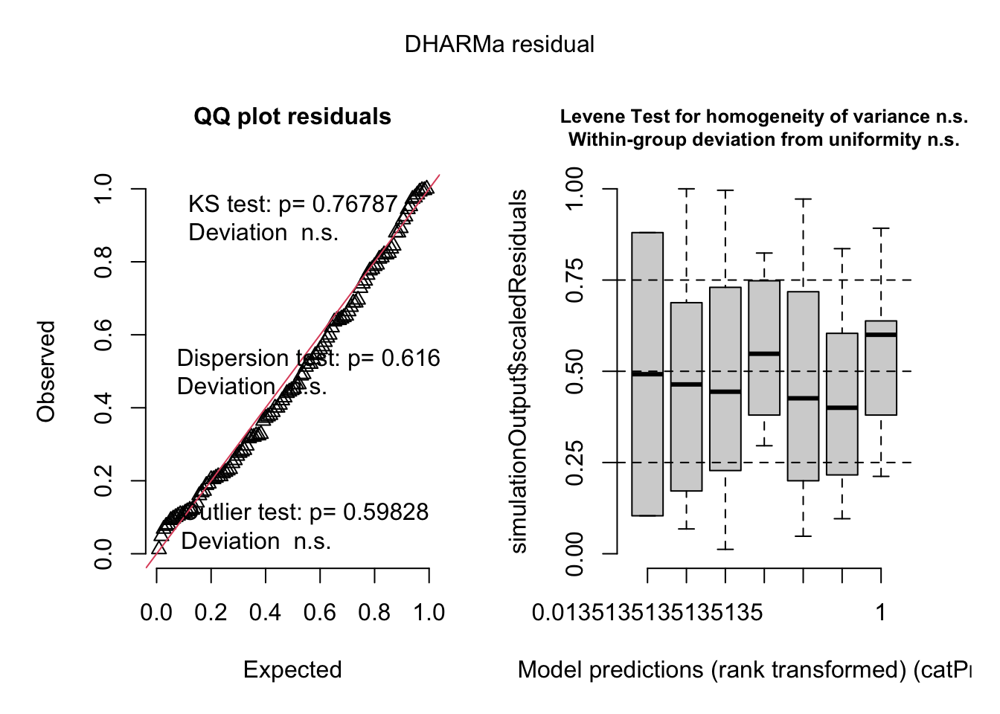
Both models find an increase of leaf nitrogen over the years. The beta regression models the bounded response directly, and its residuals show no problems.
Warton, D.I. and Hui, F.K.C. (2011) “The arcsine is asinine: The analysis of proportions in ecology,” Ecology, 92(1), pp. 3–10. Available at: https://doi.org/10.1890/10-0340.1.
Kubinec, R. (2023) “Ordered beta regression: A parsimonious, well-fitting model for continuous data with lower and upper bounds,” Political Analysis, 31(4), pp. 519–536. Available at: https://doi.org/10.1017/pan.2022.20.
Smithson, M. and Verkuilen, J. (2006) “A better lemon squeezer? Maximum-likelihood regression with beta-distributed dependent variables,” Psychological Methods, 11(1), pp. 54–71. Available at: https://doi.org/10.1037/1082-989X.11.1.54.
Dealing with 0/1 observations: The beta distribution is defined only strictly between 0 and 1, so exact zeros or ones need an extension. The hurdle beta (in glmmTMB: zero-inflated beta) works like zero-inflation for counts (Section 9.3.3), but because a beta never produces an exact 0, the zero part is a separate logistic model for the zeros. A predictor can therefore affect whether a value is zero and how large it is otherwise in different ways (Douma and Weedon, 2019). The ordered beta (Kubinec, 2023) uses a single linear predictor plus two thresholds on the logit scale that decide when a value is exactly 0 or 1. It assumes that a predictor that raises the mean of the continuous part also lowers the probability of a 0, and it needs fewer parameters when there are several predictors. The ordered beta was introduced only in 2022, so applied studies more often use zero/one-inflated or hurdle models. Other options are to squeeze the data into (0, 1) before a beta regression (Smithson and Verkuilen, 2006), a quasibinomial GLM (no likelihood, so no AIC and no DHARMa residuals), or quantile regression (Section 10.3.2). The beta models in glmmTMB (beta, ordered beta, hurdle beta) can include random effects, and their precision can depend on predictors (dispformula, Section 10.1.2). An example with zeros follows in the case study on plant cover (Section 9.7.2).
9.3 Residuals and their solutions in GLMs
First of all: everything we said about residual checks for LMs (Section 2.4) and about model selection (Chapter 8) also applies for GLMs, with only very few additions, so you should check your model in principle as before. However, there are a few tweaks you have to be aware of.
Let’s look again at the titanic example
m1 = glm(survived ~ sex*age, family = "binomial", data = titanic)How can we check the residuals of this model? Due to an unfortunate programming choice in R (Nerds: Check class(m1)), the standard residual plots still work
par(mfrow = c(2, 2))
plot(m1)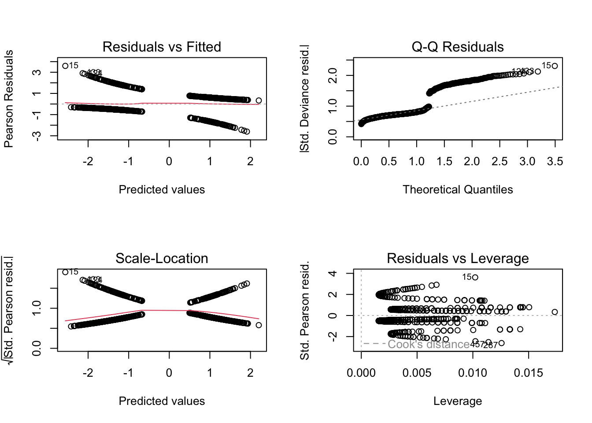
but they look horrible, because they still check for normality of the residuals, while we are interested in the question of whether the residuals are binomially distributed.
9.3.1 DHARMa residual plots for GL(M)Ms
The DHARMa package that we already introduced in Section 2.4.2 solves this problem
library(DHARMa)
res = simulateResiduals(m1)Standard plot:
plot(res)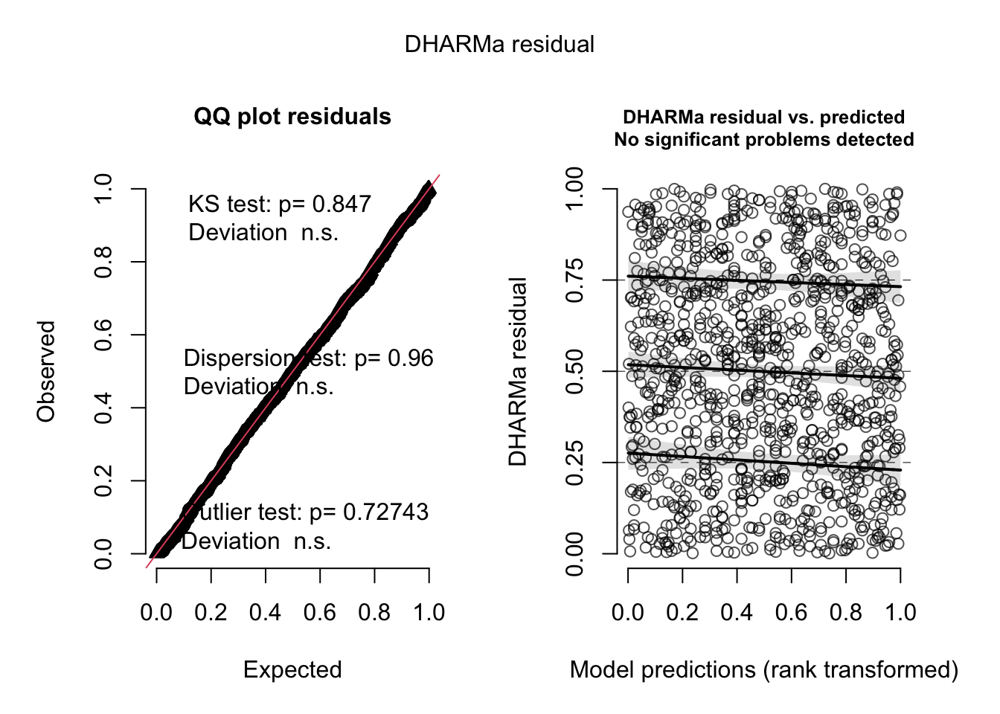
Out of the help page: The function creates a plot with two panels. The left panel is a uniform Q-Q plot (calling plotQQunif), and the right panel shows residuals against predicted values (calling plotResiduals), with outliers highlighted in red.
Very briefly, we would expect that a correctly specified model shows:
A straight 1-1 line, as well as not significant of the displayed tests in the Q-Q-plot (left) -> Evidence for a correct overall residual distribution (for more details on the interpretation of this plot, see help).
Visual homogeneity of residuals in both vertical and horizontal direction, as well as no significance of quantile tests in the Residual vs. predicted plot (for more details on the interpretation of this plot, see help).
Deviations from these expectations can be interpreted similarly to a linear regression. See the vignette for detailed examples.
With that in mind, we can say that there is nothing special to see here. Also residuals against predictors shows no particular problem:
par(mfrow = c(1, 2))
plotResiduals(res, form = model.frame(m1)$age)
plotResiduals(res, form = model.frame(m1)$sex)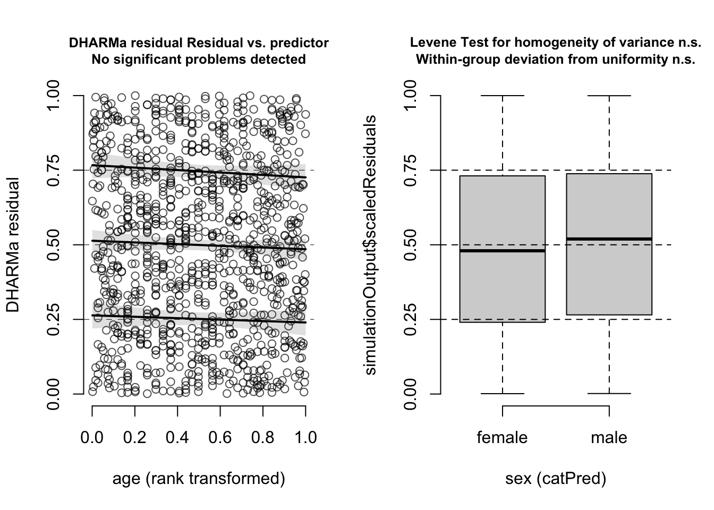
However, residuals against the missing predictor pclass show a clear problem:
dataUsed = as.numeric(rownames(model.frame(m1)))
plotResiduals(res, form = titanic$pclass[dataUsed])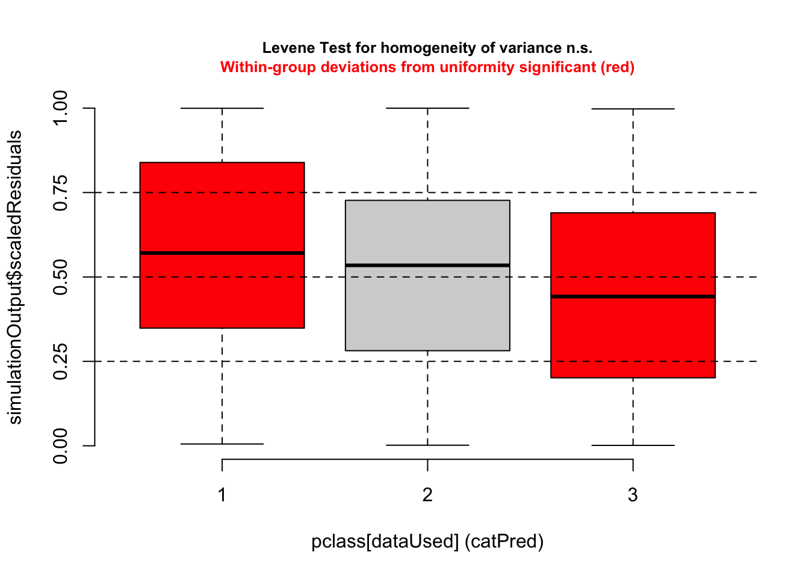
Thus, I should add passenger class to the model
m2 = glm(survived ~ sex*age + pclass, family = "binomial", data = titanic)
summary(m2)
Call:
glm(formula = survived ~ sex * age + pclass, family = "binomial",
data = titanic)
Coefficients:
Estimate Std. Error z value Pr(>|z|)
(Intercept) 2.790839 0.362822 7.692 1.45e-14 ***
sexmale -1.029755 0.358593 -2.872 0.00408 **
age -0.004084 0.009461 -0.432 0.66598
pclass2 -1.424582 0.241513 -5.899 3.67e-09 ***
pclass3 -2.388178 0.236380 -10.103 < 2e-16 ***
sexmale:age -0.052891 0.012025 -4.398 1.09e-05 ***
---
Signif. codes: 0 '***' 0.001 '**' 0.01 '*' 0.05 '.' 0.1 ' ' 1
(Dispersion parameter for binomial family taken to be 1)
Null deviance: 1414.62 on 1045 degrees of freedom
Residual deviance: 961.92 on 1040 degrees of freedom
(263 observations deleted due to missingness)
AIC: 973.92
Number of Fisher Scoring iterations: 5res2 = simulateResiduals(m2)
plotResiduals(res2, form = model.frame(m2)$pclass)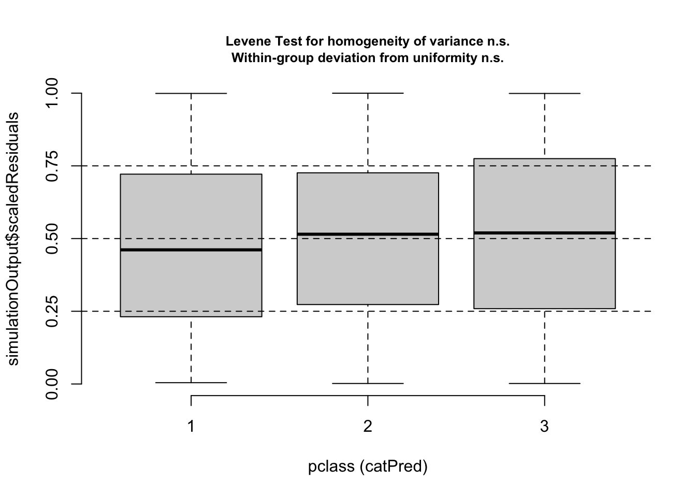
Now, residuals look fine. Of course, if your model gets more complicated, you may want to do additional checks, for example for the distribution of random effects etc.
9.3.2 Dispersion problems in GLMs
One thing that is different between GLMs and LM is that GLMs can display overall dispersion problems. The most common GLMs to show overdispersion are the Poisson and the binomial with k/n data (0/1 data cannot be overdispersed).
The reason is that simple GLM distributions such as the Poisson or the Binomial (for k/n data) do not have a parameter for adjusting the spread of the observed data around the regression line (dispersion), but their variance is a fixed function of the mean.
There are good reasons for why this is the case (Poisson and Binomial describe particular processes, e.g. coin flip, for which the variance is a fixed function of the mean), but the fact is that when applying these GLMs on real data, we often find overdispersion (more dispersion than expected), and more rarely, underdispersion (less dispersion than expected).
To remove the assumptions of a fixed dispersion, there are three options, of which I usually prefer the third one:
- Quasi-distributions, which are available in glm. Those add a term to the likelihood that corrects the p-values for the dispersion, but they are not distributions, so there are no residual checks and no AIC. Therefore discouraged.
- Observation-level random effect (OLRE) - Add a separate random effect per observation. This effectively creates a normal random variate at the level of the linear predictor, increases variance on the responses.
- A GLM distribution with variable dispersion, for Poisson usually the negative binomial, for k/n binomial data the beta-binomial (
family = betabinomialin glmmTMB).
The reason why I prefer the 3rd option is that it allows better residual checks and to model the dispersion as a function of the predictors (see Section 10.2). OLRE is also a valid solution.
Note
Overdispersion is often created by model misfit. Thus, before moving to a variable dispersion GLM, you should check for / correct model misfit.
9.3.2.1 Recognizing overdispersion
To understand how to recognize overdispersion, let’s look at an example. We’ll use the Salamanders dataset from the package glmmTMB, staring with a simple Poisson glm:
library(glmmTMB)
library(lme4)
library(DHARMa)
m1 = glm(count ~ spp + mined, family = poisson, data = Salamanders)Overdispersion will be automatically highlighted in the standard DHARMa plots
res = simulateResiduals(m1, plot = T)You see the dispersion problem by:
Dispersion test in the left plot significant
QQ plot S-shaped
Quantile lines in the right plots outside their expected quantiles
You can get a more detailed output with the testDispersion function, which also displays the direction of the dispersion problem (over or underdispersion)
testDispersion(res)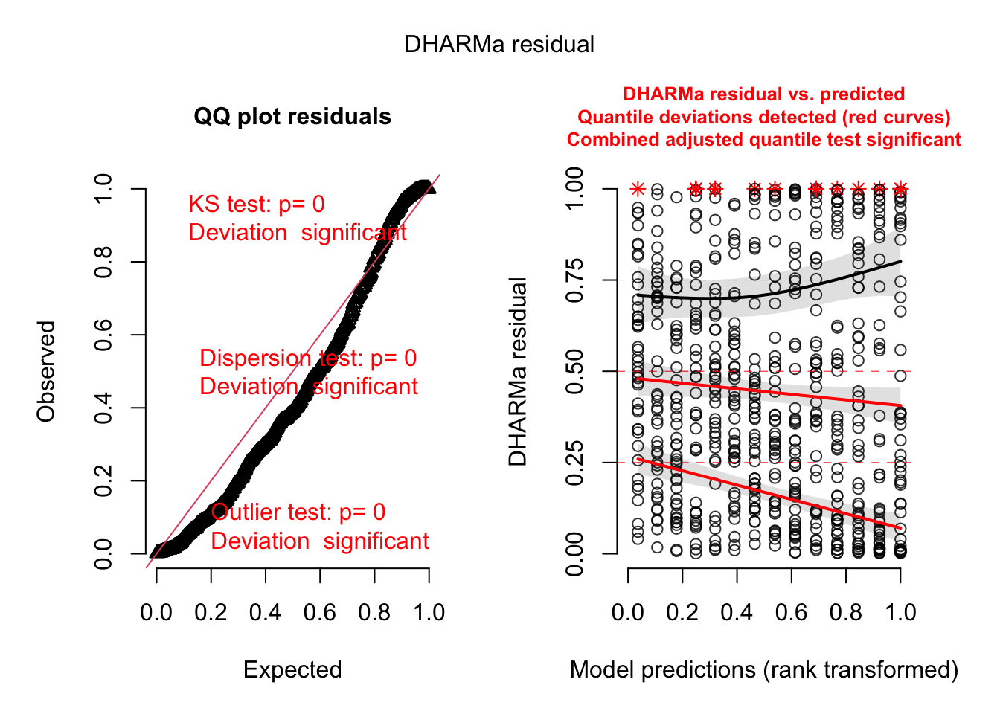
DHARMa nonparametric dispersion test via sd of residuals fitted vs.
simulated
data: simulationOutput
dispersion = 3.9152, p-value < 2.2e-16
alternative hypothesis: two.sidedOK, often the dispersion problem is caused by structural problems. Let’s add a random effect for site, which makes sense. We can do so using the function lme4::glmer, which adds the same extensions to glm as lmer adds to lm. This means we can use the usual random effect syntax from Section 4.2.1.
m2 = glmer(count ~ spp + mined + (1|site),
family = poisson, data = Salamanders)Testing the residuals
res = simulateResiduals(m2, plot = T)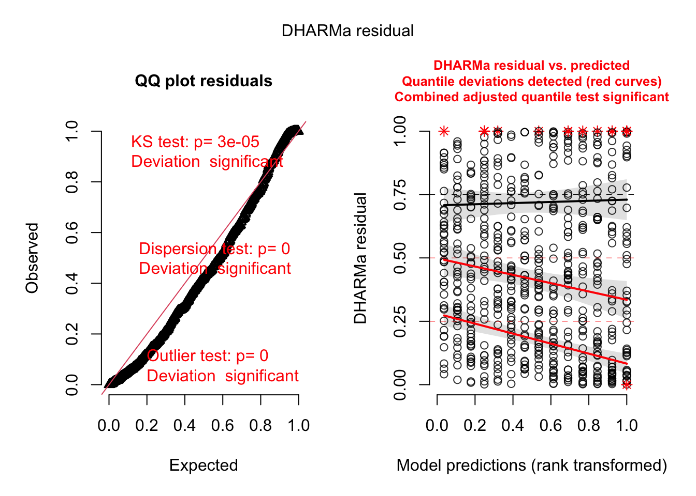
shows that there is still some overdispersion. Actually, what the plots also show is heteroskedasticity, and we should probably deal with that as well, but we will only learn how in the next chapter on dispersion models (Chapter 10). For now, let’s switch to a negative binomial model. This could be fit with lme4, but it is more convenient to use the package glmmTMB, which has the same syntax as lme4, but more advanced options.
m3 = glmmTMB(count ~ spp + mined + (1|site), family = nbinom2, data = Salamanders)
res = simulateResiduals(m3, plot = T)
Now, the test is fine. The negative binomial is a Poisson distribution with a gamma-distributed rate. glmmTMB offers two parameterizations: nbinom2 (variance \(\mu + \mu^2/\theta\), quadratic in the mean, the usual starting point) and nbinom1 (variance \(\mu (1 + \alpha)\), linear in the mean); compare both by AIC if in doubt.
9.3.3 Zero-inflation
Another common problem in count data (Poisson / negative binomial), but also other GLMs (e.g. binomial, beta) is that the observed data has more zeros than expected by the fitted distribution. For the beta, 1-inflation, and for the k/n binomial, n-inflation is also common, and tested for / addressed in the same way.
To deal with this zero-inflation, one usually adds an additional model component that controls how many zeros are produced. The default way to do this is assuming two separate processes which act after one another:
- First, we have the normal GLM, predicting what values we would expect
- On top of that, we have a logistic regression, which decides whether the GLM prediction or a zero should be observed
Note that the result of 1 can also be zero, so there are two explanations for a zero in the data. Zero-inflated GLMMs can, for example, be fit with glmmTMB, using the ziformula argument.
9.3.3.1 Recognizing zero-inflation
Caution
The fact that you have a lot of zeros in your data does not indicate zero-inflation. Zero-inflation is with respect to the fitted model. You can only check for zero-inflation after fitting a model.
Let’s look at our last model - DHARMa has a special function to check for zero-inflation
testZeroInflation(res)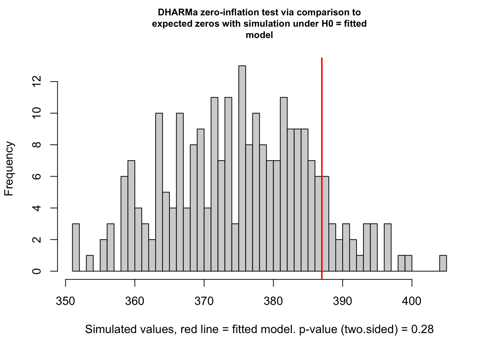
DHARMa zero-inflation test via comparison to expected zeros with
simulation under H0 = fitted model
data: simulationOutput
ratioObsSim = 1.0301, p-value = 0.28
alternative hypothesis: two.sidedThis shows no sign of zero-inflation. There are, however, two problems with this test:
- For some model structures (e.g. spatial correlation structures in glmmTMB), DHARMa can only simulate unconditionally, i.e. it re-simulates the random effects; with unconditional residuals, dispersion and zero-inflation tests are less powerful (see the subsection on conditional residual checks in Section 11.2)
- When there is really zero-inflation, variable dispersion models such as the negative Binomial often simply increase the dispersion to account for the zeros, leading to no apparent zero-inflation in the residuals, but rather underdispersion.
Thus, for zero-inflation, model selection, or simply fitting a ZIP model is often more reliable than residual checks. Compare the models with and without ziformula via AIC or likelihood ratio test. Do not use the p-value of the zero-inflation intercept for this, as it tests a zero-inflation probability of 0.5, not the absence of zero-inflation.
m4 = glmmTMB(count ~ spp + mined + (1|site), family = nbinom2, ziformula = ~1, data = Salamanders)
summary(m4) Family: nbinom2 ( log )
Formula: count ~ spp + mined + (1 | site)
Zero inflation: ~1
Data: Salamanders
AIC BIC logLik -2*log(L) df.resid
1674.4 1723.5 -826.2 1652.4 633
Random effects:
Conditional model:
Groups Name Variance Std.Dev.
site (Intercept) 0.2944 0.5426
Number of obs: 644, groups: site, 23
Dispersion parameter for nbinom2 family (): 0.942
Conditional model:
Estimate Std. Error z value Pr(>|z|)
(Intercept) -1.6832 0.2742 -6.140 8.28e-10 ***
sppPR -1.3197 0.2875 -4.591 4.42e-06 ***
sppDM 0.3686 0.2235 1.649 0.099047 .
sppEC-A -0.7098 0.2530 -2.806 0.005016 **
sppEC-L 0.5714 0.2191 2.608 0.009105 **
sppDES-L 0.7929 0.2166 3.660 0.000252 ***
sppDF 0.3120 0.2329 1.340 0.180329
minedno 2.2633 0.2838 7.975 1.53e-15 ***
---
Signif. codes: 0 '***' 0.001 '**' 0.01 '*' 0.05 '.' 0.1 ' ' 1
Zero-inflation model:
Estimate Std. Error z value Pr(>|z|)
(Intercept) -16.41 4039.11 -0.004 0.997In this case, we have no evidence for zero-inflation (AIC 1674.4 with vs. 1672.4 without zero-inflation, i.e. the simpler model is preferred; the estimated zero-inflation intercept of about -16 on the logit scale, i.e. a probability of about 0, with a huge standard error is a boundary estimate). To see an example where you can find zero-inflation, see the owls exercise (Caution 9.2).
9.4 Interpreting interactions in GLMs
A significant problem with interpreting GLMs is the interpretation of slopes in the presence of other variables, in particular interactions. To understand this problem, let’s first confirm to ourselves: if we simulate data under the model assumptions, parameters will be recovered as expected.
library(effects)
set.seed(123)
trt = as.factor(sample(c("ctrl", "trt"), 5000, replace= T))
concentration = runif(5000)
response = plogis(0 + 1 * (as.numeric(trt) - 1) + 1*concentration)
survival = rbinom(5000, 1, prob = response)
dat = data.frame(trt = trt,
concentration = concentration,
survival = survival)
m1 = glm(survival ~ trt * concentration, data = dat, family = "binomial")
summary(m1)
Call:
glm(formula = survival ~ trt * concentration, family = "binomial",
data = dat)
Coefficients:
Estimate Std. Error z value Pr(>|z|)
(Intercept) 0.07491 0.08240 0.909 0.363
trttrt 0.93393 0.12731 7.336 2.20e-13 ***
concentration 0.89385 0.14728 6.069 1.29e-09 ***
trttrt:concentration 0.13378 0.23675 0.565 0.572
---
Signif. codes: 0 '***' 0.001 '**' 0.01 '*' 0.05 '.' 0.1 ' ' 1
(Dispersion parameter for binomial family taken to be 1)
Null deviance: 5920.1 on 4999 degrees of freedom
Residual deviance: 5622.9 on 4996 degrees of freedom
AIC: 5630.9
Number of Fisher Scoring iterations: 4plot(allEffects(m1))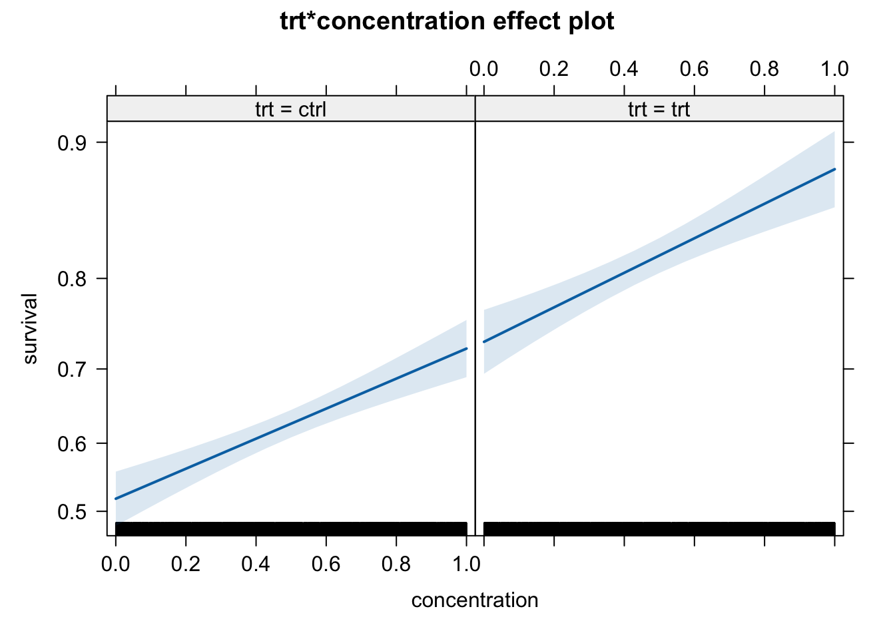
The problem with this, however, is the condition that we “simulate data under model assumptions”, which includes the nonlinear link function. Let’s have a look what happens if we simulate data differently: in this case, we just assume that treatment changes the overall probability of survival (from 45% to 90%), and the concentration increases the survival by up to 10% for each group. We may think that we don’t have an interaction in this case, but the model finds one
response = 0.45 * as.numeric(trt) + 0.1*concentration
survival = rbinom(5000, 1, response)
dat = data.frame(trt = trt,
concentration = concentration,
survival = survival)
m2 = glm(survival ~ trt * concentration,
data = dat, family = "binomial")
summary(m2)
Call:
glm(formula = survival ~ trt * concentration, family = "binomial",
data = dat)
Coefficients:
Estimate Std. Error z value Pr(>|z|)
(Intercept) -0.30719 0.08142 -3.773 0.000161 ***
trttrt 2.46941 0.18030 13.696 < 2e-16 ***
concentration 0.64074 0.14149 4.529 5.94e-06 ***
trttrt:concentration 1.37625 0.39167 3.514 0.000442 ***
---
Signif. codes: 0 '***' 0.001 '**' 0.01 '*' 0.05 '.' 0.1 ' ' 1
(Dispersion parameter for binomial family taken to be 1)
Null deviance: 5848.4 on 4999 degrees of freedom
Residual deviance: 4355.1 on 4996 degrees of freedom
AIC: 4363.1
Number of Fisher Scoring iterations: 6plot(allEffects(m2))It looks in the effect plots as if the slope is changing as well, but note that this is because the effect plots scale the y axis according to the link - absolutely, the effect of concentration is 10% for both groups.
The reason is simple: if we plot the plogis function, it becomes obvious that at different base levels (which would be controlled by trt in our case), moving a unit in concentration has a different effect.
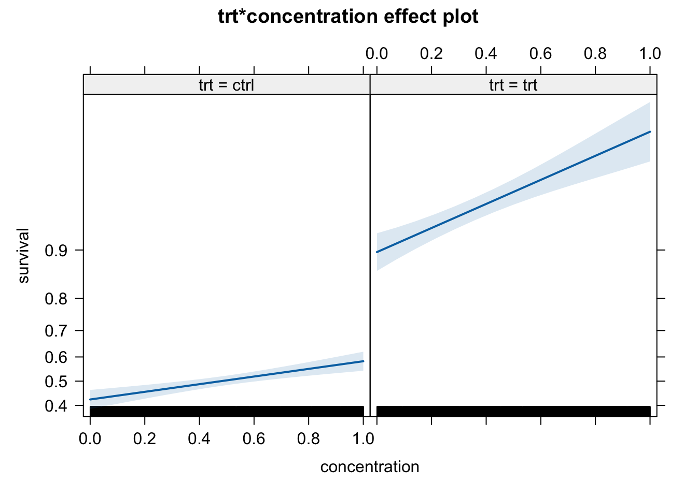
If we turn this around, this means that if we want the model to have the same effect of concentration at the response scale for both treatments, we must implement an interaction.
Whether this is a feature or a bug of GLMs depends a bit on the viewpoint. One could argue that, looking at survival, for example, it doesn’t make sense that the concentration should have an effect of absolute 10% on top of the baseline created by trt for either 45% and 90% survival, and if we see such an effect, we should interpret this as an interaction, because on the odds scale, which is what the logit link works with, the same 10% change is much larger close to 100% than around 50%. Whether this is the biologically relevant scale is a modeling decision.
Still, this also means that main effects and interactions can change if you change the link function, and default links are not always natural from a biological viewpoint.
There are several ways to get better interpretable interactions. One option is that we could fit the last model with a binomial distribution, but with an identity link (note that identity-link binomial models may predict outside [0, 1] and may need start values via start = ...; use with care)
m3 = glm(survival ~ trt * concentration,
data = dat, family = binomial(link = "identity"))
summary(m3)
Call:
glm(formula = survival ~ trt * concentration, family = binomial(link = "identity"),
data = dat)
Coefficients:
Estimate Std. Error z value Pr(>|z|)
(Intercept) 0.42369 0.02010 21.079 < 2e-16 ***
trttrt 0.48388 0.02174 22.254 < 2e-16 ***
concentration 0.15935 0.03483 4.575 4.77e-06 ***
trttrt:concentration -0.06690 0.03582 -1.868 0.0618 .
---
Signif. codes: 0 '***' 0.001 '**' 0.01 '*' 0.05 '.' 0.1 ' ' 1
(Dispersion parameter for binomial family taken to be 1)
Null deviance: 5848.4 on 4999 degrees of freedom
Residual deviance: 4347.2 on 4996 degrees of freedom
AIC: 4355.2
Number of Fisher Scoring iterations: 12plot(allEffects(m3))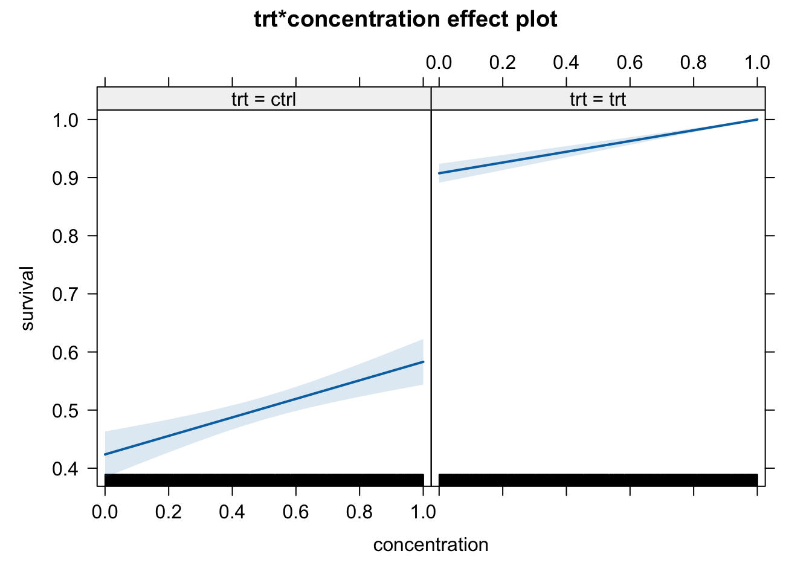
Now, we can interpret effects and interactions exactly like in a linear regression.
Another option is to look at the predicted effects at the response scale, e.g. via the effect plots, and interpret from there if we have an interaction according to what you would define as one biologically. One option to do this is the margins package.
Note
If effect directions change in sign, they will do so under any link function (as they are always monotone), so changes in effect direction are robust to this problem.
9.5 New considerations for GLMMs
As we saw, in principle, random effects can be added to GLMs very much in the same way as before (Chapter 4). Note, however, that there is a conceptual difference:
In an LMM, we had y = f(x) + RE + residual, where both RE and residual error were normal distributions
In a GLMM, we have \(y \sim dist[link^{-1}(f(x) + RE)]\), so the normally distributed RE goes through the inverse link into the response distribution
This has a number of consequences that may be unexpected if you don’t think about it.
9.5.1 Unconditional vs. marginal predictions
One of those is that, if you have a nonlinear link function, predictions based on the fixed effects (unconditional, see Tip 4.3 for the terms) will not correspond to the mean of your data, or the average of the model predictions including the random effect (marginal predictions). To understand this, imagine we have a logistic regression, and our fixed effects predict a mean of 1. Then the unconditional prediction at the response scale
plogis(1)[1] 0.7310586Now, let’s try to see what the average (marginal) prediction over all random effects is. We simulate random intercepts from a normal distribution with sd = 1 (1e5 draws). In this case, there will be additional variation around the random intercept.
mean(plogis(1 + rnorm(1e5, sd = 1)))[1] 0.6972359The value (about 0.70) is lower than the unconditional prediction (0.73), and this value is also what you would approximately get if you take the mean of your data.
Whether this is a problem or not is a matter of perspective. From statistical viewpoint, assuming that your model assumptions correspond to the data-generating model, there is nothing wrong with the unconditional (fixed effect) prediction not corresponding to the mean of the data. From a practical side, however, many people are unsatisfied with this, because they want to show predictions against data. A simple and transparent way to create marginal predictions is the simulation above: create unconditional predictions on the link scale, add random effects simulated with the estimated variances, push them through the corresponding link function and average.
9.6 Take-home messages
Tip
- Choose the distribution from the type of response data (counts, 0/1, k/n, positive continuous, proportions), and then check the residuals of the fitted model.
- The estimates are on the scale of the link function. Report effects on the response scale: rate ratios for log links, odds ratios for logit links, or back-transformed predictions with CIs (
emmeans(..., type = "response")). - Check dispersion before you interpret p-values: with overdispersed Poisson or k/n binomial data, p-values are too small. Overdispersion is often caused by model misfit, so check the model structure first; then use a negative binomial or beta-binomial family, an observation-level random effect, or a dispersion model.
- Many zeros do not mean zero-inflation; zero-inflation is relative to the fitted model. Compare models with and without
ziformulainstead of relying on the residual test alone. - With a nonlinear link, interactions and effects depend on the scale. In a GLMM, predictions from the fixed effects alone (unconditional) need not match the average prediction over the random effects (marginal) or the mean of your data.
9.7 Case studies
The following case studies apply the models of this chapter to real data, including residual checks and fixes for dispersion and zero-inflation problems (Section 9.3). Try to solve the exercises yourself before looking at the solutions.
9.7.1 Count data - owls
Hartig, F. (2024) “Introduction to Bayesian statistics with R.” Available at: https://florianhartig.github.io/LearningBayes/.
9.7.2 Continuous proportions - plant cover
Plant cover is one of the most common continuous proportions in ecology, and it comes with some special issues (Damgaard and Irvine, 2019):
Damgaard, C.F. and Irvine, K.M. (2019) “Using the beta distribution to analyse plant cover data,” Journal of Ecology, 107(6), pp. 2747–2759. Available at: https://doi.org/10.1111/1365-2745.13200.
- How was cover measured? Pin-point (point-intercept) data are hits out of N pins, i.e. k/n data; as plants grow in clumps, they are often overdispersed (beta-binomial). Cover classes (Braun-Blanquet, Londo, …) are ordinal. Visual estimates in % are continuous, but often rounded to 1, 5 or 10%.
- Zeros: if a zero means “too little to be recorded”, the ordered beta fits the idea of one continuous scale; if it means that the species cannot grow there, the hurdle beta separates presence from cover where present.
- Totals: because plants overlap and there is bare ground, the cover of all species in a plot does not sum to 100%. Only relative cover (share of total vegetation) sums to 1.
- Several species: the cover of species in the same plot is usually correlated (Section 9.2.4.1). For joint models of many species, Korhonen et al. (2024) found the hurdle beta most accurate in simulations, with no noticeable difference to ordered beta for real data.
Korhonen, P. et al. (2024) “A comparison of joint species distribution models for percent cover data,” Methods in Ecology and Evolution, 15(12), pp. 2359–2372. Available at: https://doi.org/10.1111/2041-210X.14437.
The data set varespec (package vegan) contains visually estimated cover (in %) of 44 species in 24 reindeer-grazed lichen pastures in Finland; varechem contains soil chemistry for the same plots. We ask whether the cover of heather (Calluna vulgaris, Callvulg) depends on soil aluminum. Heather is absent in 9 of the 24 plots:
library(vegan)
data(varespec)
data(varechem)
d <- data.frame(cover = varespec$Callvulg / 100, Al = scale(varechem$Al)[, 1])
table(d$cover == 0)
FALSE TRUE
15 9 A beta regression fails because of the zeros:
glmmTMB(cover ~ Al, family = beta_family, data = d)Error:
! y values must be 0 < y < 1A logit transform needs a constant to deal with the zeros. The result depends on this arbitrary choice:
sapply(c(0.001, 0.01, 0.05), function(eps) {
coef(lm(qlogis((d$cover + eps) / (1 + 2 * eps)) ~ Al, data = d))["Al"]
}) Al Al Al
0.4871682 0.2695578 0.1447610 The ordered beta handles the zeros directly:
m_ord <- glmmTMB(cover ~ Al, family = ordbeta(), data = d)
summary(m_ord) Family: ordbeta ( logit )
Formula: cover ~ Al
Data: d
AIC BIC logLik -2*log(L) df.resid
-46.8 -40.9 28.4 -56.8 19
Dispersion parameter for ordbeta family (): 12.7
Conditional model:
Estimate Std. Error z value Pr(>|z|)
(Intercept) -3.5472 0.4216 -8.413 <2e-16 ***
Al 0.2571 0.2370 1.085 0.278
---
Signif. codes: 0 '***' 0.001 '**' 0.01 '*' 0.05 '.' 0.1 ' ' 1plot(simulateResiduals(m_ord))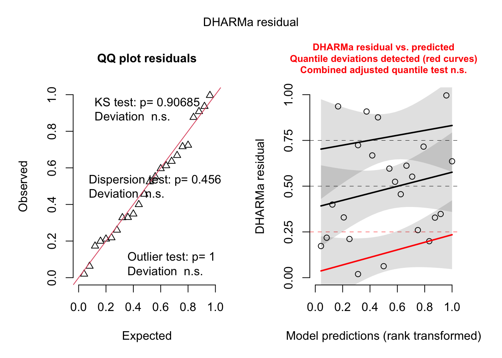
The hurdle beta separates presence and cover. Note that the zero part (ziformula) models the probability of absence:
m_hurdle <- glmmTMB(cover ~ Al, ziformula = ~ Al, family = beta_family, data = d)
summary(m_hurdle) Family: beta ( logit )
Formula: cover ~ Al
Zero inflation: ~Al
Data: d
AIC BIC logLik -2*log(L) df.resid
-49.4 -43.5 29.7 -59.4 19
Dispersion parameter for beta family (): 12.6
Conditional model:
Estimate Std. Error z value Pr(>|z|)
(Intercept) -3.45345 0.41401 -8.341 <2e-16 ***
Al 0.02052 0.30000 0.068 0.945
---
Signif. codes: 0 '***' 0.001 '**' 0.01 '*' 0.05 '.' 0.1 ' ' 1
Zero-inflation model:
Estimate Std. Error z value Pr(>|z|)
(Intercept) -0.6527 0.4861 -1.343 0.1794
Al -0.9854 0.5917 -1.666 0.0958 .
---
Signif. codes: 0 '***' 0.001 '**' 0.01 '*' 0.05 '.' 0.1 ' ' 1The data hint that more aluminum raises the probability that heather is present (negative coefficient on absence, p = 0.10), with no sign of an effect on its cover where it is present.
For the expected cover at low, mean and high aluminum (-1, 0, 1 SD), we can use predict() for the hurdle model:
newd <- data.frame(Al = c(-1, 0, 1))
predict(m_hurdle, newdata = newd, type = "response")[1] 0.01255334 0.02016658 0.02619169For the ordered beta, predict(type = "response") gives only the mean of the continuous part, ignoring the zeros; the expected cover has to be computed from the thresholds with a small helper function (see the box):
TipExpected values for the ordered beta
The ordered beta has a linear predictor \(\eta\) and two thresholds \(\psi_1 < \psi_2\) (stored as psi). The probability of an exact 0 is \(1 - \text{logit}^{-1}(\eta - \psi_1)\), of an exact 1 it is \(\text{logit}^{-1}(\eta - \psi_2)\), and in between the values follow a beta with mean \(\text{logit}^{-1}(\eta)\). The expected value combines the three parts:
ordbeta_mean <- function(m, newdata) {
eta <- predict(m, newdata = newdata, type = "link", re.form = NA)
psi <- m$fit$par[names(m$fit$par) == "psi"] # the two thresholds
p0 <- 1 - plogis(eta - psi[1]) # P(y = 0)
p1 <- plogis(eta - psi[2]) # P(y = 1)
p1 + (1 - p0 - p1) * plogis(eta)
}re.form = NA sets random effects to zero, so the function also works for mixed models. If the data contain no 1s, the upper threshold cannot be estimated well and gets a very large value (here about 19), which does no harm.
ordbeta_mean(m_ord, newd)[1] 0.01231587 0.01755623 0.02459877Both models give similar predictions; the hurdle beta additionally shows where the effect acts.
9.7.3 Binomial GLM - snails
The following dataset contains information about the occurrences of 3 freshwater snail species and their infection rate with schistosomiasis (freshwater snails are intermediate hosts). The data and the analysis is from Rabone et al. (2019).
Rabone, M. et al. (2019) “Freshwater snails of biomedical importance in the niger river valley: Evidence of temporal and spatial patterns in abundance, distribution and infection with schistosoma spp.” Parasites & vectors, 12(1), pp. 1–20.
library(EcoData)
?EcoData::snailsThe dataset has data on three snail species: Biomphalaria pfeifferi (BP), Bulinus forskalii (BF), and Bulinus truncatus (BT). For this task, we will focus only on Bulinus truncatus (BT).
We want to answer two questions:
- What are the variables that explain the occurrence of the Bulinus truncatus species (=Species distribution model)
- What are the variables that influence the infection of the snails with Schistosomiasis
TipHints
Prepare dataset before the analysis:
data = EcoData::snails
data$sTemp_Water = scale(data$Temp_Water)
data$spH = scale(data$pH)
data$swater_speed_ms = scale(data$water_speed_ms)
data$swater_depth = scale(data$water_depth)
data$sCond = scale(data$Cond)
data$swmo_prec = scale(data$wmo_prec)
data$syear = scale(data$year)
data$sLat = scale(data$Latitude)
data$sLon = scale(data$Longitude)
data$sTemp_Air = scale(data$Temp_Air)
# Remove NAs
vars = c("Temp_Water", "pH", "Latitude", "Longitude", "Cond", "seas_wmo", "wmo_prec", "water_speed_ms", "water_depth", "Temp_Air", "year", "duration", "locality", "site_irn", "coll_date")
data = data[complete.cases(data[, vars]), ]Factors which drive the occurrence of BT
Minimal model:
model1 = glm(bt_pres~ sTemp_Water, data = data, family = binomial)Add environmental variables such as Temperature, pH, water metrics (e.g. water speed etc). Which variables could be potential confounders (year? locality? Season?….)
Factors which affect the infection rate
We use a k/n binomial model:
model2 = glm(cbind(BT_pos_tot, BT_tot - BT_pos_tot )~ sTemp_Water , data = data[data$BT_tot > 0, ], family = binomial)Add environmental variables such as Temperature, pH, water metrics (e.g. water speed etc). Which variables could be potential confounders (year? locality? Season?….)
9.7.4 Making spatial predictions with a logistic regression - elephant SDM
To demonstrate how to fit a species distribution model and extrapolate it in space, let’s have a look at the elephant dataset, which is contained in EcoData
library(EcoData)
?elephantThe object elephant contains two subdatasets
elephant$occurenceData contains presence / absence data as well as bioclim variables (environmental predictors) for the African elephant
elephant$predictionData data with environmental predictors for spatial predictions
The environmental data consists of 19 environmental variables, called bio1 through bio19, which are public and globally available bioclimatic variables (see https://www.worldclim.org/data/bioclim.html for a description of the variables). For example, bio1 is the mean annual temperature. No understanding of these variables is required for the task, the only difficulty is that many of them are highly correlated because they encode similar information (e.g. there are several temperature variables).
The goal of this exercise is to fit a logistic regression model based on the observed presence / absences, and then make new predictions of habitat suitability in space across Africa based on the fitted model. Thus, our workflow consists of two steps:
- building and optimizing the predictive model, and
- using the predictive model to make predictions on new data and visualizing the results.
Here an example of how you could do this
Build predictive model:
model = glm(Presence~bio1, data = elephant$occurenceData, family = binomial()) # minimum modelTo check the predictive power of the model, you can either use
AIC(model) [1] 3511.176library(pROC)
auc(elephant$occurenceData$Presence, predict(model, type = "response"))Area under the curve: 0.7053The AUC is a common measure of how well a model separates presences from absences: the probability that a randomly chosen presence gets a higher predicted value than a randomly chosen absence (0.5 = random, 1 = perfect). However, it doesn’t penalize for complexity, as the AIC. Better to look at it under cross-validation (Section 8.4)
library(boot)
res = cv.glm(elephant$occurenceData, model, cost = auc, K=5)res$delta[1] 0.7054131 0.7054131Currently, fit and validation AUC are nearly identical, because we have a very simple model. However, for more complex models, this could change.
Drop some of the highly correlated variables (don’t use all of them).
Use quadratic effects
Use
stepAICor thedredgefunction (Tip 8.2) to optimize the predictive model
Make new predictions
The data for making spatial predictions is in elephant$predictionData. This new dataset is not a data.frame but a raster object, which is a special data class for spatial data. You can plot one of the predictors in the following way.
library(sp)
library(raster)
plot(elephant$predictionData$bio1)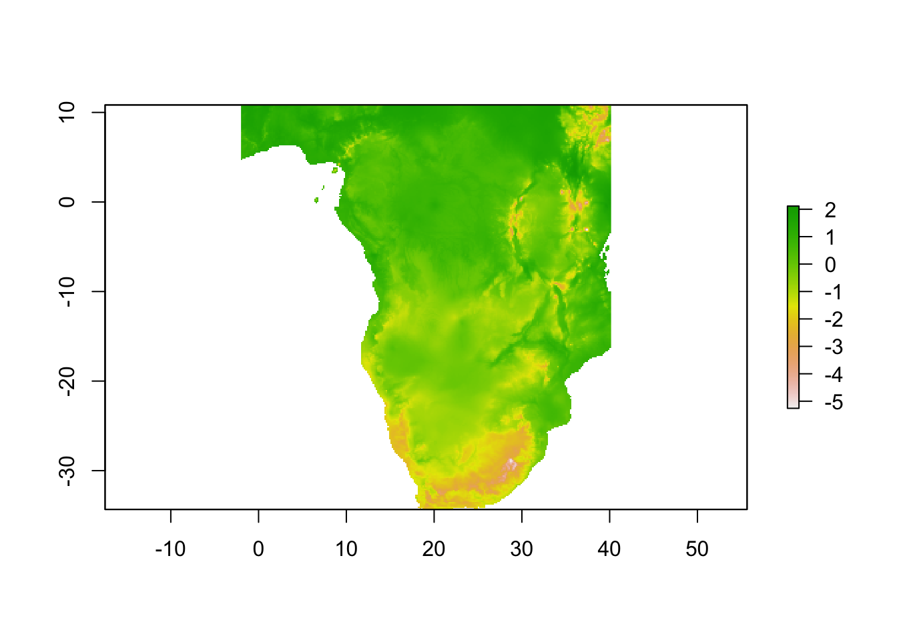
As our new_data object is not a typical data.frame, we are not using the standard predict function for a glm, which is ?predict.glm, but the predict function from the raster object (which internally transforms the new_data into a classical data.frame, pass then the data.frame to our model, and then transforms the output back to a raster object). Therefore, the syntax is slightly different to how we previously used predict().
predictions = predict(elephant$predictionData, model = model, type = "response")
head(as.data.frame(predictions)) layer
1 0.1195466
2 0.1148339
3 0.1102836
4 0.1080683
5 0.1037547
6 0.1016556The advantage of the raster object is that we can directly use it to create a map (the raster object has coordinates for each observation):
spplot(predictions, colorkey = list(space = "left") )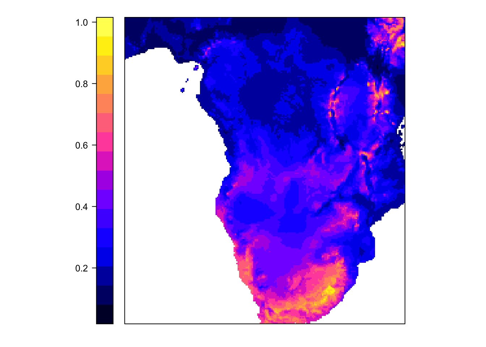